WorkFromHome
Wowza Enterprise (Wowza Inc.) has hired you to investigate an incident involving a workstation used by Otello John, which is believed to have been compromised by a threat actor.
The attacker reportedly changed the desktop wallpaper to a questionable image. The IT team has already provided you with initial information, and it is your duty to report back your findings.
Task 1
Identify the phishing URL that the user clicked on, resulting in credential harvesting.
I'll start by checking what browsers Otello has on his system.
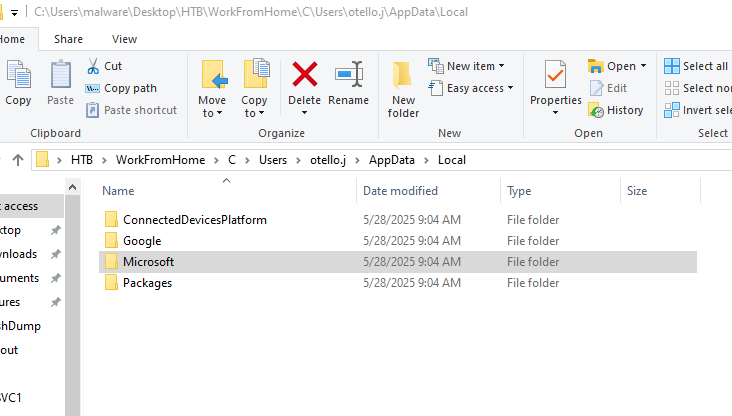
Both MS Edge and Chrome are present. I'll run SQLECmd.exe against both of their History database files.
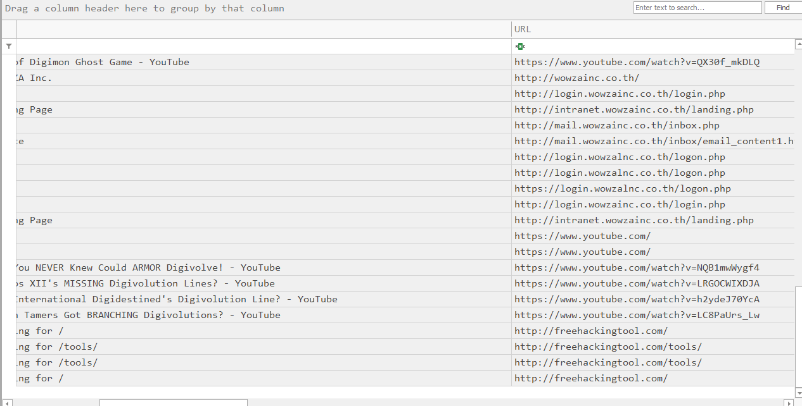
Notice how Otello first logged in with the login.php endpoint... but then did the same with the logon.php (malicious!) endpoint.
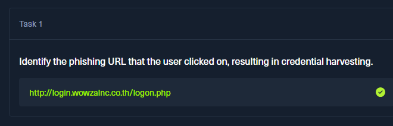
Task 2
When did the threat actor gain access to the victim's computer via RDP for the first time?
I'll run EvtxECmd against the Security.evtx event file. This file contains authentication events, and I'll be able to view successful ones by looking for Event ID 4624.
EvtxECmd.exe -f "C:\Users\malware\Desktop\HTB\WorkFromHome\C\Windows\System32\winevt\logs\Security.evtx" --csv evtxout
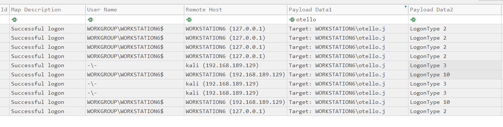
Take a look at the 2 highlighted logon events. The attacker machine first initiated a Type 3 logon (network) at 2025-05-27 11:59:36, followed by a Type 10 authentication (RemoteInteractive/RDP) being completed 20 seconds later.
I think this shows that the attacker used a tool like xfreerdp, first authenticating via logon Type 3 with NLA (Network Level Authentication), and only then actually popping the RDP shell, after Windows sets up the desktop and everything. The Type 3 network logon is the NLA pre-authentication step, while the Type 10 is the full interactive session being established.
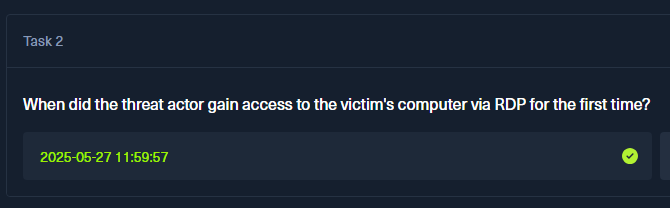
Task 3
The threat actor accessed several sensitive files on the victim's work-related folder. What is the full path of the PowerPoint presentation file opened by the attacker?
I'll look into the user's Recent directory to see whether there is a presentation file shortcut in there. A shortcut being present here indicates the file was opened during the attacker's session.
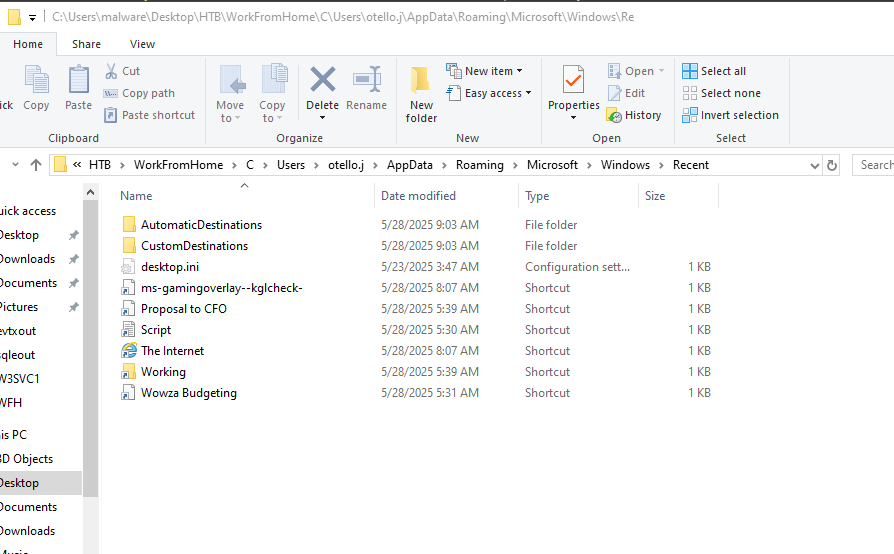
There it is. I'll run LECmd.exe to get more details from the shortcut.
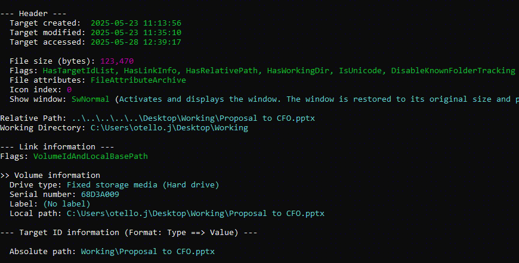
The full path of this document is C:\Users\otello.j\Desktop\Working\Proposal to CFO.pptx
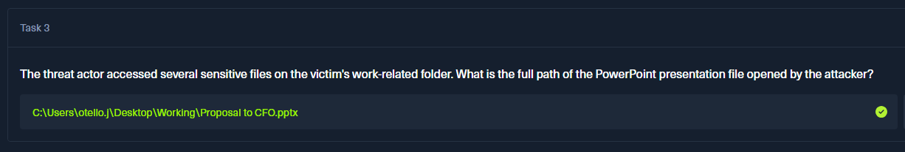
Task 4
The threat actor discovered a privilege that allows specific volume-level management operations and could be exploited to get full control over the C drive. What is this special privilege?
I know exactly what this privilege is, it is SeManageVolumePrivilege. This allows a user to perform volume-level management operations, which can be abused (via tools like SeManageVolumeExploit) to reset the DACL permissions on the entire C: volume, effectively giving every user access to otherwise-protected files like NTDS.dit or a CA's private key.
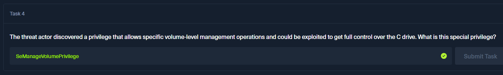
Task 5
What is the name of the executable downloaded by the threat actor to exploit previously found privilege?
I'll take a look at Chrome's download history. This is part of the output from the earlier SQLECmd operation.
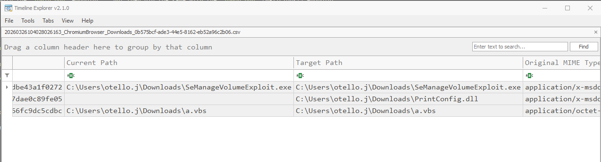
3 interesting results. SeManageVolumeExploit.exe does exactly what I've described above. It exploits the privilege to reset the disk's global file permissions, giving every user access to sensitive files.
a.vbs is a small VBScript, probably used for persistence via a Wscript shell.
However, the DLL download is the most interesting. There is no destination path, meaning the download did not finish or was interrupted.
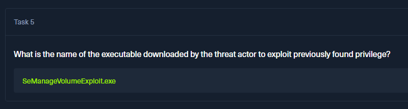
Task 6
What is the full URL from where the threat actor tried to download a DLL file?
This can be seen by navigating to the Download URL field in Timeline Explorer.
http://freehackingtool.com/tools/PrintConfig.dll
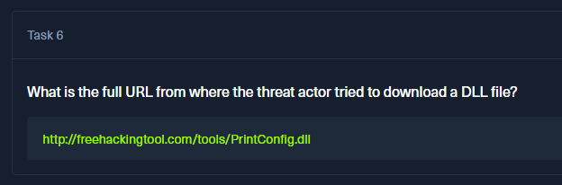
Task 7
The malicious DLL file was not successfully downloaded, as the download was interrupted by the safe browsing safety feature. Research Browser forensics and find the description of the interrupt reason that caused the download to be disrupted.
For the DLL (second row in the table below), it's worth noting both the danger type and the interrupt reason.
State Danger Type Interrupt Reason
Complete Not Dangerous No Interrupt
Cancelled Dangerous Host Browser Shutdown
Complete Not Dangerous No Interrupt
These two fields tell slightly different parts of the story. The Dangerous Host danger type confirms that Chrome's safe browsing flagged the download source as malicious. The Browser Shutdown interrupt reason tells us how the download actually ended: the browser was closed.
Most likely, the attacker saw the safe browsing warning popup and closed the browser, either out of frustration or to avoid leaving more traces, before pivoting to a quieter alternative.
I searched chrome safe browsing interrupt reasons on the web and found a great resource containing a list of all the reasons and other Chrome values.
https://dfir.blog/chrome-values-lookup-tables/
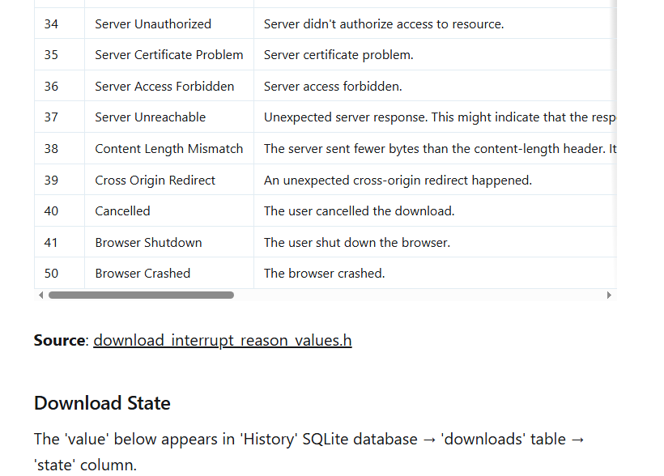
Looking up interrupt reason 41: Browser Shutdown - The user shut down the browser.
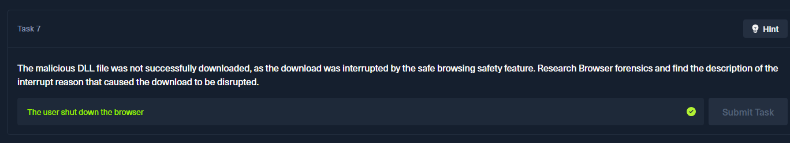
Task 8
Since the download was not successful from the browser directly, which LOLBIN did the threat actor use to download this file successfully?
A few LOLBINs come to mind for a Windows machine, curl and certutil being the first ones. I hoped to find out more by looking through their prefetch files, but the prefetch directory didn't contain any mentions of either.
I used MFTECmd.exe to parse the $J and $MFT journals, and loaded the latter into Timeline Explorer. I then set up these filters:
[Update Timestamp] > #2025-05-28 12:44:01# And Contains([Extension], '.dll') And Contains([Name], 'Print')
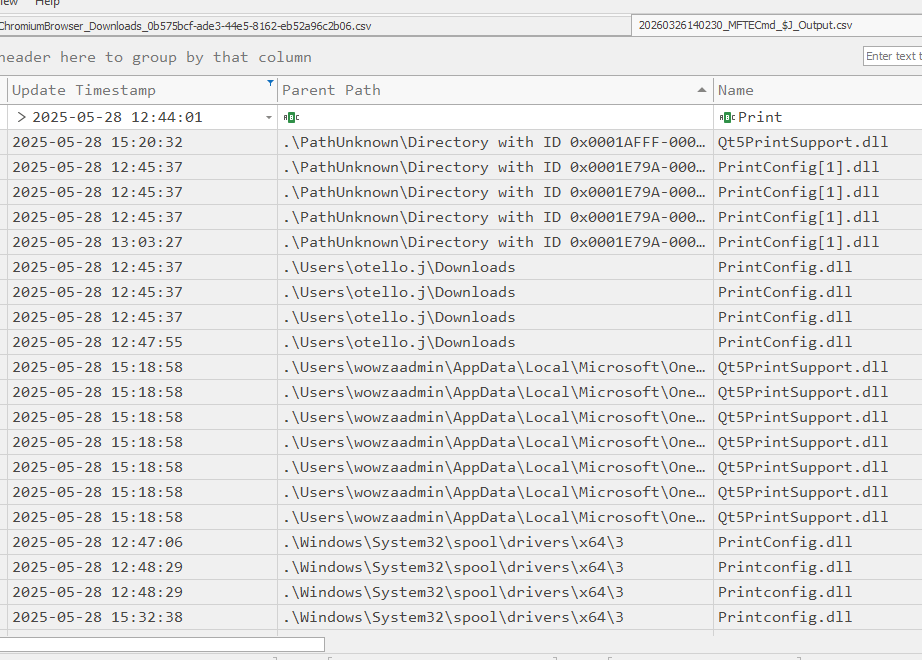
I've seen this [1] file name convention before. It's a telltale sign of certutil usage.
The reason this [1] suffix exists is that certutil initially downloads the file into the user's temporary internet files cache at C:\Users\otello.j\AppData\LocalLow\Microsoft\CryptnetUrlCache\Content. To prevent overwriting files with the same name, the Windows Cache Manager appends a number in brackets to the new download. Once the download is complete in the cache, certutil copies/moves the data from there to the final destination specified.
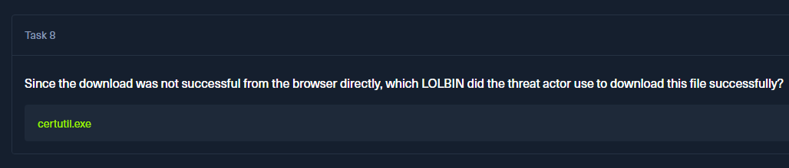
Task 9
When was the malicious DLL file successfully downloaded using this LOLBIN?
The answer to this question is visible in the screenshots from Q8. 2025-05-28 12:45:37 is the timestamp, and it is the same for both the temp file and the one that ended up in the downloads directory.
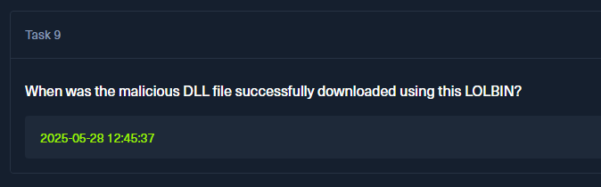
Task 10
To gain System privileges, the threat actor replaced an existing DLL with the same name. What is the original path of the legitimate DLL?
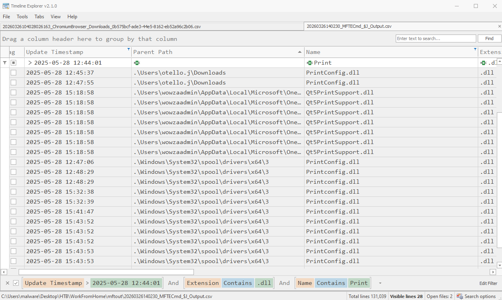
Starting from 2025-05-28 12:47:06 (the deletion of the original DLL), I can see a chain of events that transpired with the PrintConfig DLL. The full path of this library is C:\Windows\System32\spool\drivers\x64\3\PrintConfig.dll
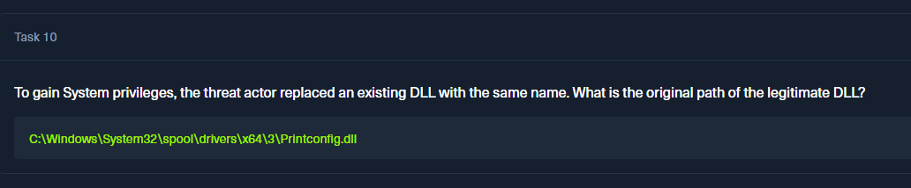
Task 11
The threat actor removed the legitimate DLL before replacing it with the malicious DLL. When was the legit DLL deleted?
This was already revealed while solving Q10. It is 2025-05-28 12:47:06
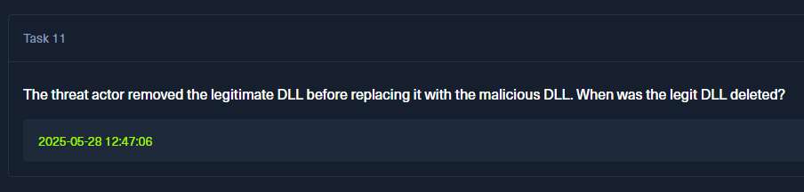
Task 12
When was the malicious DLL detected as malware?
For this I'll have to look into Defender's detection log and action history. I'll browse to the C:\ProgramData\Microsoft\Windows Defender\Support directory, where the .log files live.
2025-05-28T15:19:19.561 [RTP] Duplicating the current plugin configuration object...
2025-05-28T15:19:19.561 [RTP] CCMPluginConfiguration::Duplicate() - no GenerateEngineEngineConfigStruct ...
2025-05-28T15:19:19.561 [RTP] Updating plugin configuration due to recent config changes (0x42e) ...
2025-05-28T15:19:19.561 [RTP] OS Copy Accelerator feature is: 1 (0:Disabled, 1:Enabled)
2025-05-28T15:19:19.561 [RTP] Calling GenerateEngineConfigStruct (0x18) ...
2025-05-28T15:19:19.577 [RTP] RefreshPluginConfiguration completed successfully. Requested: 0x42e, Changed: 0x218
2025-05-28T15:19:21.999 Task(GetDeviceTicket -AccessKey 90EF3ABB-8A77-E35C-95E8-8ED9B6F04823 ) launched as network service
2025-05-28T15:19:26.796 [Cloud] SubmitReport(CMpSpyDssContext), ShouldSendEvenOnPaidNetworks: 1
2025-05-28T15:19:26.811 [Cloud] Start of cloud request. Passive mode: 0
2025-05-28T15:19:26.811 [Cloud] Queued cloud request.
2025-05-28T15:19:26.811 [Cloud] MpEngineCloudRequest(). hr = 0
2025-05-28T15:19:26.811 [Cloud] SubmitReport(CMpHeartbeatSpyNetReportContext), ShouldSendEvenOnPaidNetworks: 0
2025-05-28T15:19:26.811 [Cloud] Dequeued cloud request.
2025-05-28T15:19:26.811 [Cloud] Start of cloud request. Passive mode: 0
2025-05-28T15:19:26.811 [Cloud] Queued cloud request.
2025-05-28T15:19:26.984 [Cloud] Dequeued cloud request.
2025-05-28T15:19:26.984 [Cloud] RpcSpynetQueueGenerateReport(). hr = 0
2025-05-28T15:19:26.984 [Cloud] RpcSpynetQueueGenerateReport(). hr = 0
Internal signature match:subtype=Lowfi, sigseq=0x00001087D28C195A, sigsha=71b6945673f4890ccdf354e5b0e335ee0498a6d8, cached=false, source=0, resourceid=0xa1da1415
Internal signature match:subtype=Lowfi, sigseq=0x000010802042E7A8, sigsha=b56fca5079d5231df8f3a1a01f1ebadf51544305, cached=false, source=0, resourceid=0xa1da1415
Internal signature match:subtype=Lowfi, sigseq=0x0000157E506A4965, sigsha=46ad7f53203d279aa2b10fe67eb766d548232e60, cached=false, source=0, resourceid=0xa1da1415
Internal signature match:subtype=Lowfi, sigseq=0x0000157ED2190A02, sigsha=95203d8084b37e89fc8967e7cc769eb3fa7e7232, cached=false, source=0, resourceid=0xa1da1415
Internal signature match:subtype=Lowfi, sigseq=0x00005540DE3AB97F, sigsha=6cda43477c2b11d34b45a26d2fd13eaa463324e2, cached=false, source=0, resourceid=0xa1da1415
2025-05-28T15:19:28.421 FP supression checks:CheckTrusted=true (Sigseq=0x102076171a40), CheckLimit=true, IsNotRevokedCertSig=true, IsNotFpCheckDisabledSig=true, IsSignedFileCheck=false, IsNotExcludedCertificate=true (FriendlySigSeq=0x0)
2025-05-28T15:19:28.421 SDN:Issuing SDN query for \\?\C:\Windows\system32\spool\drivers\x64\3\PrintConfig.dll (\\?\C:\Windows\system32\spool\drivers\x64\3\PrintConfig.dll) (sha1=916564984e38f8bb91921cd4e40b64156a72142b, sha2=09130eeeb53a41a5b765915c5a45558486823a4a7e6214e658d71a4827600f45)
2025-05-28T15:19:28.439 [Cloud] SubmitReport(CMpSpyDssContext), ShouldSendEvenOnPaidNetworks: 1
2025-05-28T15:19:28.439 [Cloud] Start of cloud request. Passive mode: 0
2025-05-28T15:19:28.439 [Cloud] Queued cloud request.
2025-05-28T15:19:28.439 [Cloud] MpEngineCloudRequest(). hr = 0
2025-05-28T15:19:28.439 [Cloud] Dequeued cloud request.
2025-05-28T15:19:28.439 [Cloud] RpcSpynetQueueGenerateReport(). hr = 0
2025-05-28T15:19:30.780 SDN:SDN query completed: 00000000
2025-05-28T15:19:30.796 [Cloud] End of cloud request.
2025-05-28T15:19:30.953 [Cloud] End of cloud request.
2025-05-28T15:19:30.983 [Cloud] MpEngineParseSpyNetResponse(). hr = 0
2025-05-28T15:19:30.983 [Cloud] End of cloud request.
2025-05-28T15:19:31.467 [NRI] Successfully updated NIS service with platform settings for enforcement level Log
Internal signature match:subtype=Lowfi, sigseq=0x0000C4E7DCC8C5BC, sigsha=96e05c0854a4643f8f90f337f012e537590a578d, cached=false, source=0, resourceid=0x0e132b6d
2025-05-28T15:19:35.374 Using action MP_THREAT_ACTION_QUARANTINE(2), since failed to get action for threat (id - 0x8003a269, sev - 5, category - 8). hr = 0x80070002
2025-05-28T15:19:35.421 DETECTIONEVENT MPSOURCE_SYSTEM Trojan:Win64/Meterpreter.E file:C:\Windows\system32\spool\drivers\x64\3\PrintConfig.dll;service:PrintNotify;
2025-05-28T15:19:35.443 DETECTION_ADD#2 Trojan:Win64/Meterpreter.E file:C:\Windows\system32\spool\drivers\x64\3\PrintConfig.dll PropBag [length: 0, data: (null)]
2025-05-28T15:19:35.443 DETECTION_ADD#2 Trojan:Win64/Meterpreter.E service:PrintNotify PropBag [length: 0, data: (null)]
Begin Resource Scan
Scan ID:{B0BB5322-8696-4571-9D9C-6F2165EAFFBA}
Scan Source:1
Start Time:05-28-2025 15:19:15
End Time:05-28-2025 15:19:35
Explicit resource to scan
Resource Schema:postsignatureupdatescan
Resource Path:
Result Count:1
Threat Name:Trojan:Win64/Meterpreter.E
ID:2147721833
Severity:5
Number of Resources:2
Resource Schema:service
Resource Path:PrintNotify
Extended Info - SigSeq:0000000000000000
Extended Info - SigSha:da39a3ee5e6b4b0d3255bfef95601890afd80709
Resource Schema:file
Resource Path:C:\Windows\system32\spool\drivers\x64\3\PrintConfig.dll
Extended Info - SigSeq:0000102076171a40
Extended Info - SigSha:1b81de24f114a2d7ab41eb079c2baf93a2a5840e
End Scan
Here we can see exactly how and why Defender detected this DLL as malicious and quarantined it.
RTP activated roughly around 15:19:19 and began querying the found DLL shortly after. After getting a few low-confidence matches from its internal signature database, it issued an SDN query, reaching out to Microsoft's cloud with the malware's hash to check whether other machines had globally reported it as malicious.
After the query completed, the DLL was identified as Trojan:Win64/Meterpreter.E, and Defender defaulted to quarantining it, flagging the PrintNotify service in the process as well, to prevent it from executing malicious code in memory.
Why did Defender wait almost 3 hours before killing the malware? My best guess is that a change was detected in a critical directory (but then why not right away?), OR the PrintNotify service tried to actually use the DLL, which prompted RTP to kick in and nuke it.
To answer the question, the malware was detected as a Meterpreter payload at 2025-05-28T15:19:35.
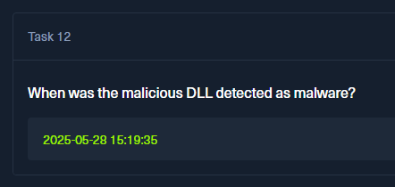
Task 13
The threat actor initiated a Windows component to load this DLL. What is the CLSID of this component?
I searched the SOFTWARE hive for any mention of the PrintConfig.dll file.
RECmd.exe -f "C:\Users\malware\Desktop\HTB\WorkFromHome\C\Windows\System32\config\SOFTWARE" --sa Printconfig.dll
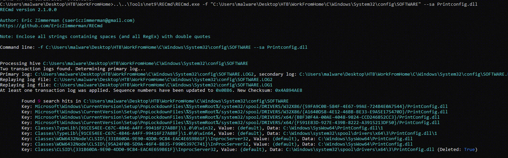
There are 3 different CLSIDs present, but only 1 has a matching path set in the InprocServer32 default value. This key is used to load DLLs from a specified path and is commonly abused in COM hijack attacks. I found a nice resource online with an extensive CLSID lookup list.
https://github.com/jkerai1/CLSID-Lookup/tree/main
{331B60DA-9E90-4DD0-9C84-EAC4E659B61F} = Printer Extension Manager Class
{95A24F08-5D9A-46F4-8B35-F9905397C741} = PSFactoryBuffer
Neither of these was the answer. I turned my focus towards the PrintNotify service, since the Defender logs confirmed it uses the very DLL that was replaced.
RECmd.exe -f "C:\Users\malware\Desktop\HTB\WorkFromHome\C\Windows\System32\config\SOFTWARE" --sa PrintNotify
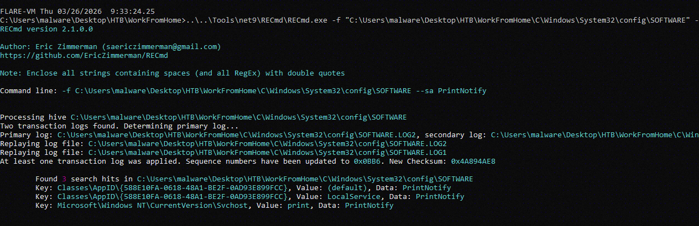
PrintNotify's AppID is {588E10FA-0618-48A1-BE2F-0AD93E899FCC}. An AppID is used by Windows to associate a COM server (like a service) with its configuration and security settings, and is tied to a CLSID that identifies the actual COM class being instantiated.
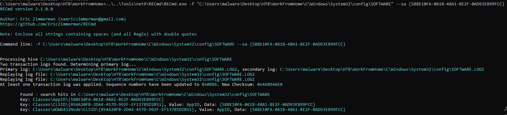
Reverse-searching with this AppID reveals the CLSID it is tied to. From what I could gather online, this CLSID is associated with the infamous LocalPotato exploit, used to gain SYSTEM privileges via impersonation.
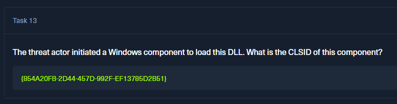
Task 14
What is the name of the service/object associated with this CLSID?
The owner of the AppID tied to this CLSID is PrintNotify.
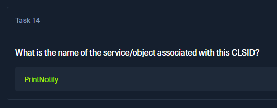
Task 15
What is the SHA1 hash of the malicious DLL file?
This can be found in the Defender logs, specifically in the SDN query line.
SDN:Issuing SDN query for \\?\C:\Windows\system32\spool\drivers\x64\3\PrintConfig.dll (\\?\C:\Windows\system32\spool\drivers\x64\3\PrintConfig.dll) (sha1=916564984e38f8bb91921cd4e40b64156a72142b, sha2=09130eeeb53a41a5b765915c5a45558486823a4a7e6214e658d71a4827600f45)
This query sends both the SHA1 and SHA2 hashes to the cloud to compare against global signatures, as mentioned earlier.
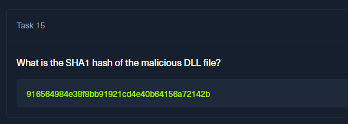
Task 16
A Second DLL file was downloaded from the same malicious domain. Where was it downloaded on the filesystem?
Since I know the attacker used certutil to deliver the first DLL, I'll look for DLL files containing the [1] suffix again.
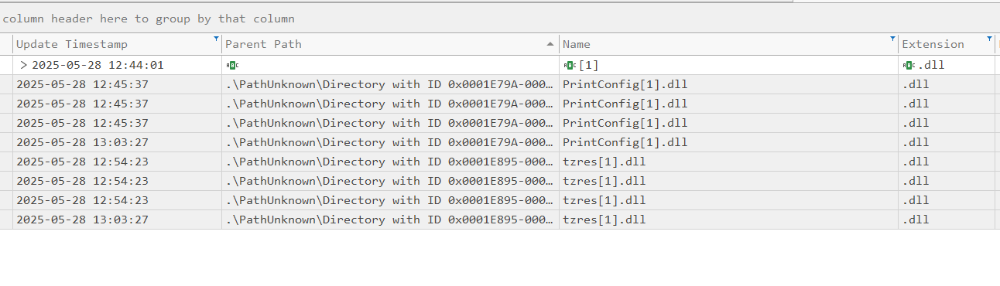
tzres.dll is the other downloaded DLL. Legitimately, this library contains time zone-related resources used by the system.
To get the full destination path, I'll search for the full name tzres.dll without the [1] suffix.
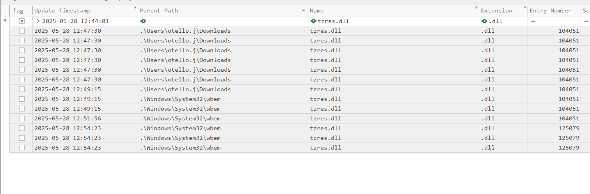
The full path the malware was moved to is C:\Windows\System32\wbem. This directory is used by WMI (Windows Management Instrumentation) and contains provider DLLs, the WMI repository, and related tooling.
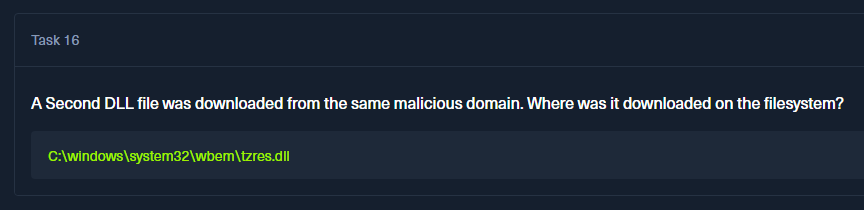
Task 17
When was this DLL downloaded on the system?
The timestamp of the FileCreate event for this DLL in the wbem directory is 2025-05-28 12:54:23
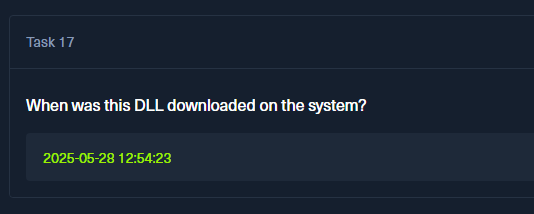
Task 18
The threat actor downloaded a VBScript for command execution to facilitate the DLL execution of the second malicious DLL. What is the full path of this script after it was moved to a new location?
I know the VBScript is named a.vbs. I'll search for the file within the loaded $UsnJournal in Timeline Explorer.
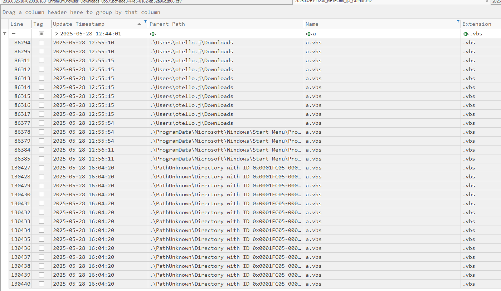
As expected, it was moved into the .\ProgramData\Microsoft\Windows\Start Menu\Programs\StartUp directory. Everything placed in this directory is auto-executed on logon, which is exactly why attackers love it.
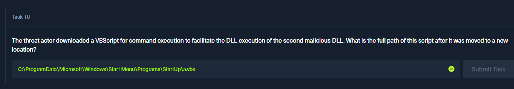
Task 19
What is the full command that the script is configured to execute?
Since I know where the file is located, I'll look for it in the $MFT output. If the script is small enough, its content may be recoverable directly from the MFT record.
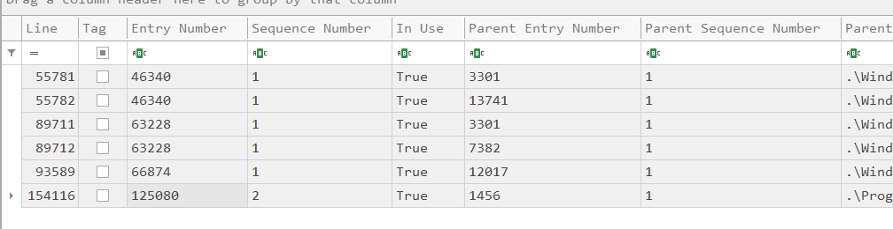
I need the entry and sequence numbers of this file. Now I can run MFTECmd with the --de flag to retrieve its contents.
MFTECmd.exe -f "C:\Users\malware\Desktop\HTB\WorkFromHome\C\$MFT" --de 125080-2
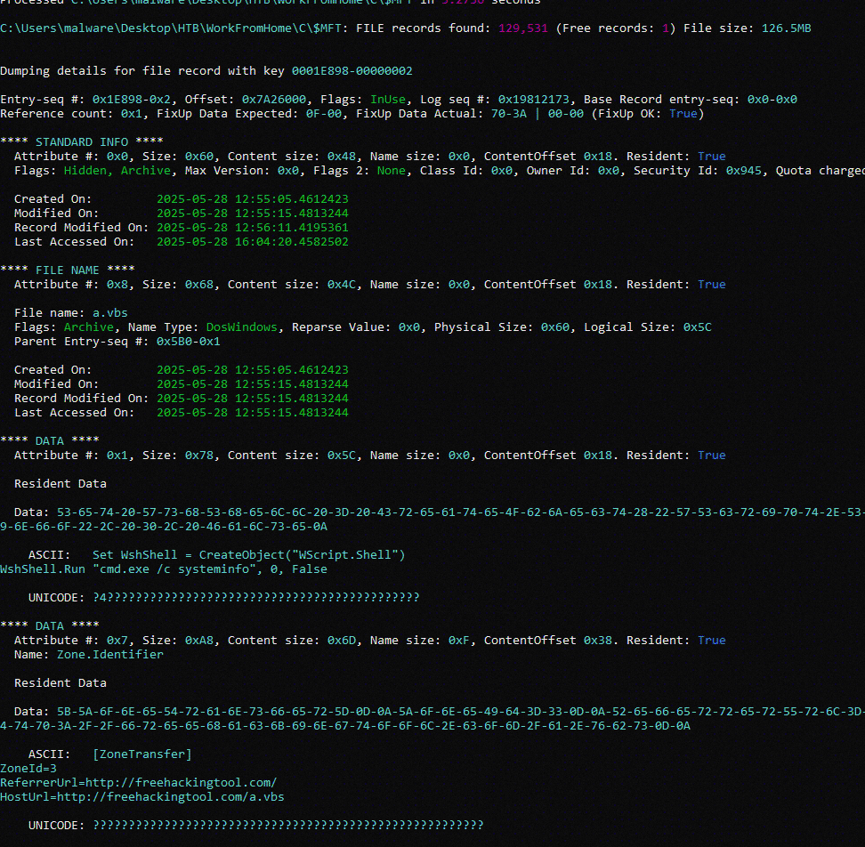
As suspected, this VBScript uses a WScript.Shell object to run a single command. In this case, systeminfo.
Set WshShell = CreateObject("WScript.Shell") WshShell.Run "cmd.exe /c systeminfo", 0, False
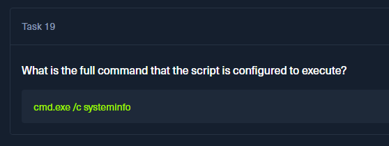
Task 20
The threat actor configured the VBS script to be hidden from the Windows GUI (File Explorer). When was this attribute set on the file?
This event can be seen in the UsnJournal as the BasicInfoChange event.
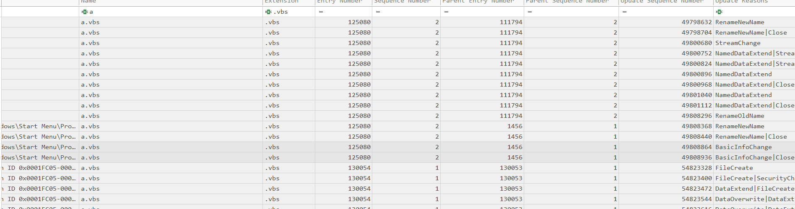
These 2 events occurred on 2025-05-28 12:56:11
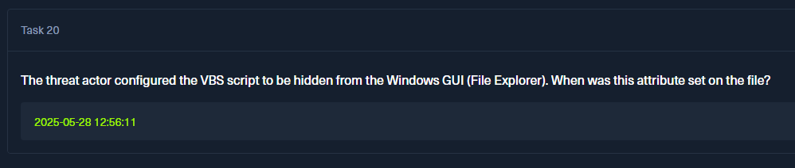
Task 21
Which process loads the previously identified DLL with this command? The command executed by the VBS script ultimately facilitates loading and execution of the Second malicious DLL, providing persistence and execution capabilities to the attacker.
My initial plan was to use Procmon to watch the systeminfo execution locally... however.
[Window Title]
C:\Users\malware\Desktop\Tools\ProcessMonitor\Procmon64.exe
[Content]
C:\Users\malware\Desktop\Tools\ProcessMonitor\Procmon64.exe
File system error (-1073740791).
[OK]
This error got in my way. Google says the code resolves to STATUS_STACK_BUFFER_OVERRUN, and I don't really feel like rebuilding my VM right now.
Write-Host "Waiting for systeminfo to start..." -ForegroundColor Cyan
while($true) {
$proc = Get-Process -Name "systeminfo" -ErrorAction SilentlyContinue
if($proc) {
Write-Host "Caught it! Capturing DLLs..." -ForegroundColor Green
$proc | Select-Object -ExpandProperty Modules | Select-Object FileName > "$env:USERPROFILE\Desktop\systeminfo_DLLs.txt"
Write-Host "Done! Check your desktop for systeminfo_DLLs.txt" -ForegroundColor Yellow
break
}
Start-Sleep -Milliseconds 100
}
I crafted this PowerShell block to capture the loaded DLLs from a running systeminfo process. I'll run this in one PS terminal while running systeminfo in another.
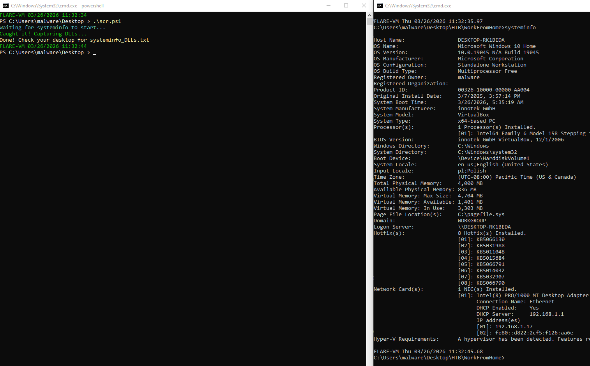
And this is the output:
FileName
--------
C:\Windows\system32\systeminfo.exe
C:\Windows\SYSTEM32\ntdll.dll
C:\Windows\System32\KERNEL32.DLL
C:\Windows\System32\KERNELBASE.dll
C:\Windows\System32\ADVAPI32.dll
C:\Windows\System32\msvcrt.dll
C:\Windows\System32\sechost.dll
C:\Windows\System32\RPCRT4.dll
C:\Windows\System32\bcrypt.dll
C:\Windows\System32\USER32.dll
C:\Windows\System32\win32u.dll
C:\Windows\System32\GDI32.dll
C:\Windows\System32\gdi32full.dll
C:\Windows\System32\msvcp_win.dll
C:\Windows\System32\ucrtbase.dll
C:\Windows\System32\OLEAUT32.dll
C:\Windows\System32\combase.dll
C:\Windows\System32\WS2_32.dll
C:\Windows\System32\SHLWAPI.dll
C:\Windows\system32\MPR.dll
C:\Windows\system32\framedynos.dll
C:\Windows\system32\VERSION.dll
C:\Windows\system32\SspiCli.dll
C:\Windows\System32\IMM32.DLL
C:\Windows\SYSTEM32\kernel.appcore.dll
C:\Windows\System32\bcryptPrimitives.dll
C:\Windows\System32\clbcatq.dll
C:\Windows\system32\wbem\wbemprox.dll
C:\Windows\SYSTEM32\wbemcomn.dll
C:\Windows\system32\wbem\wbemsvc.dll
C:\Windows\system32\wbem\fastprox.dll
C:\Windows\SYSTEM32\amsi.dll
No tzres.dll, which confirms that systeminfo does not load this library directly. The next question then is: what does load DLLs from the wbem directory during a systeminfo run?
systeminfo.exe uses COM to interact with WMI, typically via calls like CoCreateInstance. This results in WMI client-side components such as wbemprox.dll being loaded into its process.
The request is then handled by the WMI infrastructure (Winmgmt), which coordinates execution out-of-process. Instead of running providers in-process, WMI uses WmiPrvSE.exe (located in C:\Windows\System32\Wbem\) as a dedicated provider host. Critically, WmiPrvSE.exe loads its provider DLLs from the wbem directory, the exact same location where the attacker planted the malicious tzres.dll.
So when systeminfo triggers WMI, WmiPrvSE.exe spins up, loads provider DLLs including any present in the wbem folder, and the hijacked tzres.dll gets loaded alongside the legitimate ones.
WmiPrvSE.exe loads the necessary provider DLLs (such as CIMWin32.dll) to gather system information like CPU, RAM, hotfixes, and time zone data. Once collected, the data is returned to the client through COM marshaling (over RPC internally), where wbemprox.dll delivers it back to systeminfo.exe.
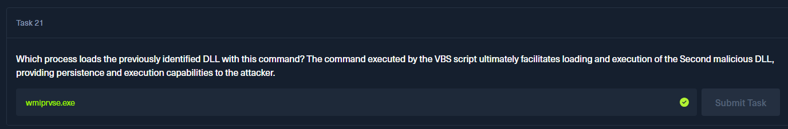
Task 22
The threat actor downloaded an image file to change the desktop wallpaper. What is the full path of this file?
I created a custom filter that selects image extensions that can be used as Windows wallpapers.
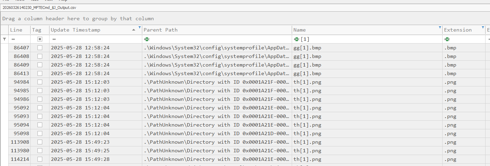
This gg.bmp file fits into the attacker's timeline. I'll search for it in the UsnJournal to find where it was saved.
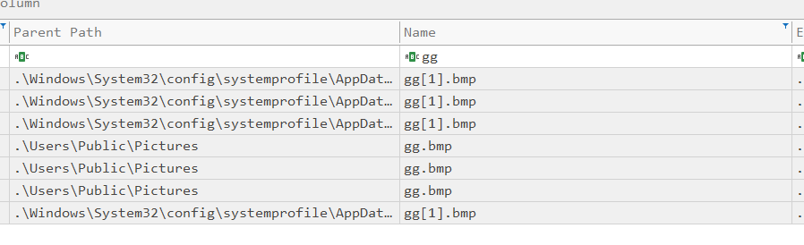
The full path of this file is C:\Users\Public\Pictures\gg.bmp
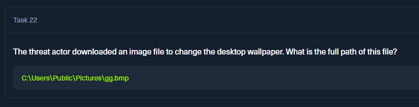
Task 23
The threat actor then proceeded to change the desktop wallpaper of the compromised user to the newly downloaded image. Find the time when the wallpaper was altered?
The first thing I wanted to try was checking 2 registry keys in the user's NTUSER.DAT hive.
RECmd.exe -f "C:\Users\malware\Desktop\HTB\WorkFromHome\C\Users\otello.j\NTUSER.DAT" --kn "Control Panel\Desktop"
RECmd.exe -f "C:\Users\malware\Desktop\HTB\WorkFromHome\C\Users\otello.j\NTUSER.DAT" --kn "Software\Microsoft\Windows\CurrentVersion\Explorer\Wallpapers"
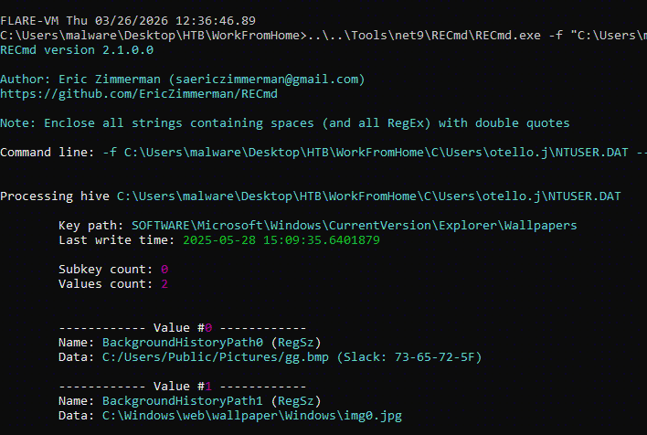
Both of those have the same timestamp, meaning the wallpaper must have been changed back at a later date. The latter key does confirm that gg.bmp was the wallpaper for some time before it was reverted.
The next place I checked was the PowerShell history. If the attacker used PS to update the registry, it would be reflected there.
dir
$type = [Type]::GetTypeFromCLSID("{854A20FB-2D44-457D-992F-EF13785D2B51}")
$object = [Activator]::CreateInstance($type)
dir
reg add "HKCU\control panel\desktop" /v wallpaper /t REG_SZ /d "C:/Users/Public/Pictures/gg.bmp" /f
And I was right. There's no timestamp in the PS history file (it's stored as plain text in ConsoleHost_history.txt with no time metadata), but the command itself confirms the attacker used PS for this modification. That points me towards the event logs, specifically the PowerShell operational log and Event ID 4104 (PowerShell script block logging).
A nice thing about Timeline Explorer is that I can just paste the whole command into a filter field, and it'll find the exact 4104 event that contains it.
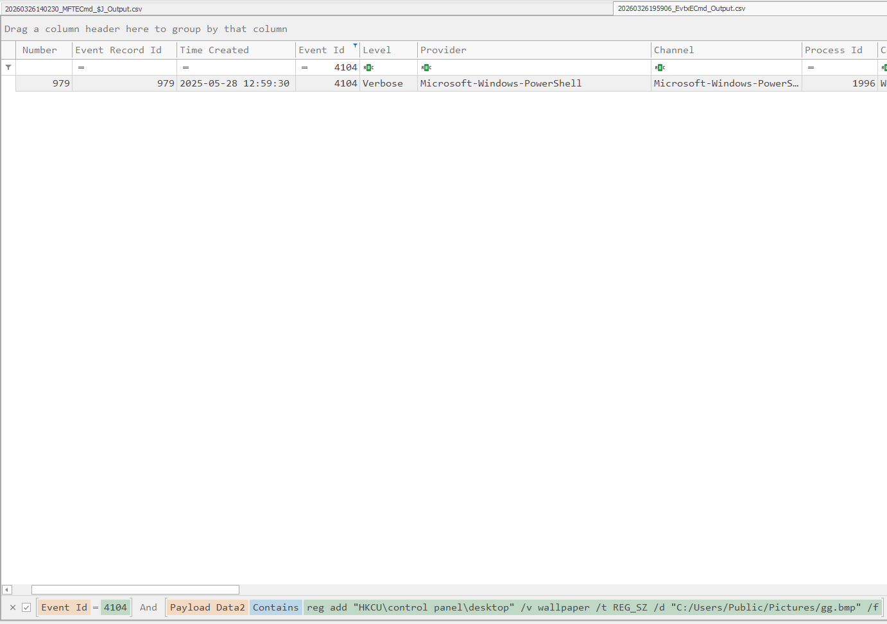
The timestamp for this event is 2025-05-28 12:59:30
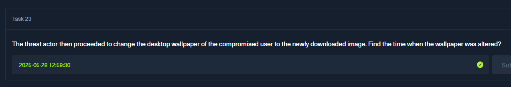
Task 24
When did the victim user log in to their workstation after the compromise?
I'll return to the Security.evtx event log output with these filters:
[Event Id] = 4624 And [Time Created] > #2025-05-28 12:59:30# And Contains([Payload Data1], 'otello')
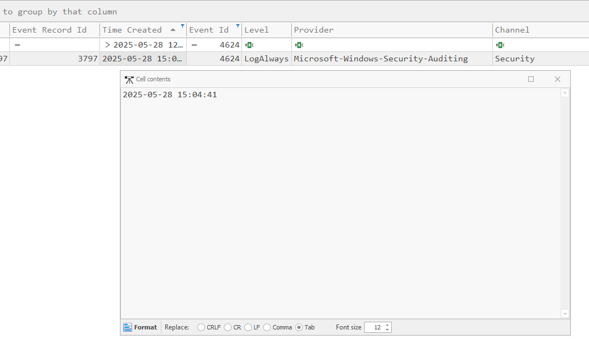
The only successful logon by otello.j after the wallpaper was set to gg.bmp occurred at 2025-05-28 15:04:41
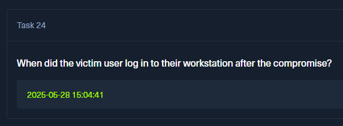
Task 25
What is the message on the new wallpaper?
I need the actual file to see the image. I'll open the $MFT journal output in Timeline Explorer and filter by the exact timestamp of gg.bmp's appearance on the system: 2025-05-28 12:58:24
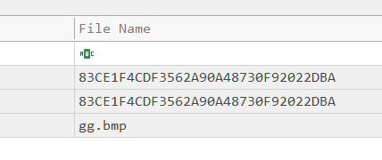
This lets me see exactly how certutil cached the file before moving it into place. The CryptnetUrlCache directory contains two entries for each file: one in the MetaData subfolder (which stores the source URL and other cache metadata) and one in the Content subfolder (which is the actual file data). The hex-like filenames are how the cache manager indexes these entries internally.
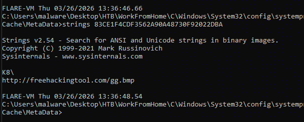
The metadata entry contains the URL it was downloaded from. As for the content entry, I'll copy it to my working directory and rename it to gg.bmp.
The text on the wallpaper is HACKED BY ANARCHY
Solved!